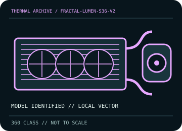

[ INDIVIDUAL COMPONENT // COOLING ]
Fractal Design Lumen S36 v2
360 mm Lumen S36 v2 loop with a 392 mm radiator, 400 mm tubing, and three Aspect 12 PWM fans.

IDENTIFICATION: Match the complete model, regional SKU, revision, and supplied socket kit. Similar names and radiator classes do not guarantee identical brackets, dimensions, leads, or warranty terms.
Manufacturer specifications and compatibility
| Exact model / listing | Fractal Design Lumen S36 v2 |
|---|---|
| Radiator dimensions and thickness | 392 × 120 × 27 mm aluminum radiator; 360 mm class. 52 mm nominal radiator-plus-25 mm-fan stack, excluding screws and fittings. |
| Fans | 3 × 120 mm Aspect 12 PWM fans, 500–2,000 rpm; 4-pin PWM control. |
| Pump / block | Ceramic-bearing pump, nominal 4,000 rpm; use the supplied pump power/control wiring shown in the guide. |
| Supported CPU sockets | Intel LGA 1700 / 1851 / 1200 / 115x / 1366 / 2011 / 2011-3 / 2066; AMD AM5 / AM4 and legacy sockets listed by Fractal. Confirm the exact bracket and CPU mounting instructions. |
| Tube length / construction | 400 mm low-permeability sleeved rubber tubing. |
| Power, fan, lighting, and display connectors | 4-pin PWM fan leads and the supplied pump power/control lead; this non-RGB S36 v2 has no lighting header requirement. Follow the guide for the correct motherboard pump/fan headers. |
| Warranty | Fractal lists a 5-year limited warranty for the Lumen S36 v2; regional coverage and proof-of-purchase conditions apply. |
| Case compatibility | Requires chassis support for a 360 mm radiator. Allow 52 mm for radiator and fans, plus tube/fitting clearance; check the mounting tray and top/front clearance against RAM, VRM heatsinks, and GPU. |
| Motherboard compatibility | Use the correct socket mounting hardware and consult the motherboard manual for pump/fan header assignment. Confirm tube routing does not foul DIMMs, VRM heatsinks, PCIe cards, or connectors. |
Warranty, maintenance, and safe installation
Closed-loop cooler: do not open or refill. With power disconnected, clean radiator fins gently and keep fans from spinning freely; inspect hose and fittings, and discontinue use if coolant residue or abnormal pump behavior appears.
- Install only with the model-specific manual and included retention hardware. Do not operate a pump dry or allow tubes to kink or rub against sharp edges.
- After installation, verify pump and fan tachometer/control operation and monitor CPU temperature under a repeatable load before normal service.
- Warranty statements are a reference, not a substitute for current regional terms; preserve the serial number and purchase record and contact the manufacturer for service.
Manufacturer sources
- Fractal Design — Lumen S36 v2 specificationsManufacturer dimensions, included Aspect fans, compatibility, and product data.
- Fractal Design — Lumen v2 manual (PDF)Manufacturer installation, socket mounting, and maintenance instructions.
Static catalog reference only. Verify the precise SKU, manual revision, and current local warranty documentation before installation.